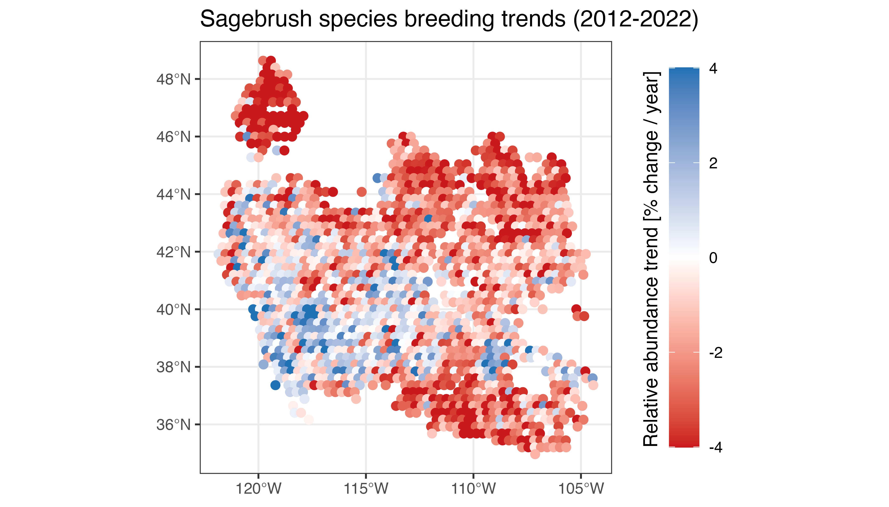

The eBird Trends Data Products provide estimates of trends in relative abundance based on eBird data. Trend estimates are made on a 27 km by 27 km grid for a single season per species (breeding, non-breeding, or resident). For further details on the methodology used to estimate these trends consult the associated paper:
Fink, D., Johnston, A., Strimas-Mackey, M., Auer, T., Hochachka, W. M., Ligocki, S., Oldham Jaromczyk, L., Robinson, O., Wood, C., Kelling, S., & Rodewald, A. D. (2023). A Double machine learning trend model for citizen science data. Methods in Ecology and Evolution, 00, 1–14. https://doi.org/10.1111/2041-210X.14186
Data users who are not comfortable in R should consider directly downloading the data from the eBird Status and Trends website.
The data frame ebirdst_runs indicates which species have
trends estimates with the has_trends column. We can filter
the data frame and only select those columns relevant to trends.
library(dplyr)
library(ggplot2)
library(rnaturalearth)
library(sf)
library(terra)
library(ebirdst)
trends_runs <- ebirdst_runs %>%
filter(has_trends) %>%
select(species_code, common_name,
trends_season, trends_region,
trends_start_year, trends_end_year,
trends_start_date, trends_end_date,
rsquared, beta0)
glimpse(trends_runs)
#> Rows: 853
#> Columns: 10
#> $ species_code <chr> "abetow", "acafly", "acowoo", "aldfly", "alepar2", "…
#> $ common_name <chr> "Abert's Towhee", "Acadian Flycatcher", "Acorn Woodp…
#> $ trends_season <chr> "resident", "breeding", "resident", "breeding", "res…
#> $ trends_region <chr> "north_america", "north_america", "north_america", "…
#> $ trends_start_year <dbl> 2012, 2012, 2011, 2012, 2015, 2012, 2011, 2011, 2012…
#> $ trends_end_year <dbl> 2022, 2022, 2021, 2022, 2022, 2022, 2021, 2021, 2022…
#> $ trends_start_date <chr> "01-25", "05-24", "11-01", "06-21", "07-26", "03-22"…
#> $ trends_end_date <chr> "05-10", "08-02", "05-03", "07-12", "12-06", "06-07"…
#> $ rsquared <dbl> 0.9231821, 0.8570363, 0.8805367, 0.7868723, 0.819570…
#> $ beta0 <dbl> -0.013923012, 0.689424792, -0.092670714, -0.16241275…Information is provided on the trends model for each species,
including two predictive performance metrics (rsquared and
beta0) that are based on a comparison of actual and
estimated trends for a suite of simulations (see Fink et al. 2023 for
further details). The columns in the trends_runs data frame
are as follows:
-
species_code: the alphanumeric eBird species code uniquely identifying the species. -
common_name: the English common name of the species. -
trends_season: season that the trend was estimated for: breeding, nonbreeding, or resident. -
trends_region: the geographic region that the trend model was run for. Note that broadly distributed species (e.g. Barn Swallow) will only have trend estimates for a regional subset of their full range. -
trends_start_year/trends_end_year: the start and end years of the trend time period. -
trends_start_date/trends_end_date: the start and end dates (MM-DDformat) of the season for which the trend was estimated. -
rsquared: R-squared value comparing the actual and estimated trends from the simulations. -
beta0: the intercept of a linear model fitting actual vs. estimated trends (actual ~ estimated) for the simulations. Positive values ofbeta0indicate that the models are systematically underestimating the simulated trend for this species.
Note that some season dates span two calendar years, for example Canvasback has 2011-2021 trends estimates for a non-breeding season defined as December 20 to January 25. In this case, the first season will be December 20, 2011 to January 25, 2012.
trends_runs %>%
filter(common_name == "Canvasback") %>%
select(trends_start_year, trends_end_year,
trends_start_date, trends_end_date)
#> # A tibble: 1 × 4
#> trends_start_year trends_end_year trends_start_date trends_end_date
#> <dbl> <dbl> <chr> <chr>
#> 1 2011 2021 12-20 01-25Downloading data
Trends data access is granted through the same process as the eBird Status Data Products. If you haven’t already requested an API key, consult the relevant section in the Introduction to eBird Status Data Products vignette.
Trends data can be downloaded for one or more species using
ebirdst_download_trends(), where the first argument is a
vector of common names, scientific names, or species codes. As with the
Status Data Products, trends data will be downloaded to a centralized
directory and file management and access is performed via `ebirdst. For
example, let’s download the breeding season trends data for Sage
Thrasher.
ebirdst_download_trends("Sage Thrasher")Loading data into R
Once the data are downloaded, the trends data for a set of species,
can be loaded into R using the function load_trends(). For
example, we can load the Sage Thrasher trends estimates we just
downloaded with:
trends_sagthr <- load_trends("Sage Thrasher")Each row corresponds to the trend estimate for a 27 km by 27 km grid
cell, identified by the srd_id column and with cell center
given by the longitude and latitude
coordinates. Columns beginning with abd_ppy provide
estimates of the percent per year trend in relative abundance and 80%
confidence intervals, while those beginning with abd_trend
provide estimates of the cumulative trend in relative abundance and 80%
confidence intervals over the time period. The abd column
gives the relative abundance estimate for the middle of the trend time
period (e.g. 2014 for a 2007-2021 trend). The
start_year/end_year and start_date/end_date
columns provide redundant information to that available in
ebirdst_runs. Specifically for Sage Thrasher we have:
trends_runs %>%
filter(common_name == "Sage Thrasher") %>%
select(trends_start_year, trends_end_year,
trends_start_date, trends_end_date)
#> # A tibble: 1 × 4
#> trends_start_year trends_end_year trends_start_date trends_end_date
#> <dbl> <dbl> <chr> <chr>
#> 1 2012 2022 05-17 07-12This tells us that the trend estimates are for the breeding season (May 17 to July 12) for the period 2012-2022.
Conversion to spatial formats
The eBird trends data are stored in a tabular format, where each row gives the trend estimate for a single cell in a 27 km by 27 km equal area grid. For each grid cell, the coordinates (longitude and latitude) are provided for the center of the grid cell. For many applications, an explicitly spatial format is more useful and these coordinates can be use to convert from the tabular format to either a vector or raster format.
Vector (points)
The tabular trend data can be converted into point vector features
for use with the sf package using the sf
function st_as_sf().
trends_sf <- st_as_sf(trends_sagthr,
coords = c("longitude", "latitude"),
crs = 4326)
print(trends_sf)
#> Simple feature collection with 2462 features and 15 fields
#> Geometry type: POINT
#> Dimension: XY
#> Bounding box: xmin: -122.1784 ymin: 33.5256 xmax: -102.975 ymax: 49.35282
#> Geodetic CRS: WGS 84
#> # A tibble: 2,462 × 16
#> species_code season start_year end_year start_date end_date srd_id abd
#> * <chr> <chr> <int> <int> <chr> <chr> <int> <dbl>
#> 1 sagthr breeding 2012 2022 05-17 07-12 254264 0.000527
#> 2 sagthr breeding 2012 2022 05-17 07-12 255764 0.0147
#> 3 sagthr breeding 2012 2022 05-17 07-12 255765 0.000214
#> 4 sagthr breeding 2012 2022 05-17 07-12 257264 0.00174
#> 5 sagthr breeding 2012 2022 05-17 07-12 257265 0.0132
#> 6 sagthr breeding 2012 2022 05-17 07-12 257266 0.00118
#> 7 sagthr breeding 2012 2022 05-17 07-12 258765 0.00335
#> 8 sagthr breeding 2012 2022 05-17 07-12 258766 0.0191
#> 9 sagthr breeding 2012 2022 05-17 07-12 258767 0.00511
#> 10 sagthr breeding 2012 2022 05-17 07-12 260264 0.000104
#> # ℹ 2,452 more rows
#> # ℹ 8 more variables: abd_ppy <dbl>, abd_ppy_lower <dbl>, abd_ppy_upper <dbl>,
#> # abd_ppy_nonzero <lgl>, abd_trend <dbl>, abd_trend_lower <dbl>,
#> # abd_trend_upper <dbl>, geometry <POINT [°]>These points can then be exported to GeoPackage for use in a GIS such as QGIS or ArcGIS with
# be sure to modify the path to the file to save the file to directory of
# your choice on your hard drive
write_sf(trends_sf, "ebird-trends_sagthr_2022.gpkg",
layer = "sagthr_trends")Raster
The tabular trend estimates can most easily be converted to raster
format for use with the terra package using the function
rasterize_trends(). Any of the columns in the trends data
frame can be selected using the layers argument and
converted into layers in the resulting raster object.
# rasterize the percent per year trend with confidence limits (default)
ppy_raster <- rasterize_trends(trends_sagthr)
print(ppy_raster)
#> class : SpatRaster
#> dimensions : 67, 100, 3 (nrow, ncol, nlyr)
#> resolution : 26665.26, 26665.28 (x, y)
#> extent : -10602273, -7935747, 3714548, 5501122 (xmin, xmax, ymin, ymax)
#> coord. ref. : +proj=sinu +lon_0=0 +x_0=0 +y_0=0 +R=6371007.181 +units=m +no_defs
#> source(s) : memory
#> names : abd_ppy, abd_ppy_lower, abd_ppy_upper
#> min values : -14.62142, -17.52655, -11.48219
#> max values : 13.62980, 11.74418, 15.77865
# rasterize the cumulative trend estimate
trends_raster <- rasterize_trends(trends_sagthr, layers = "abd_trend")
print(trends_raster)
#> class : SpatRaster
#> dimensions : 67, 100, 1 (nrow, ncol, nlyr)
#> resolution : 26665.26, 26665.28 (x, y)
#> extent : -10602273, -7935747, 3714548, 5501122 (xmin, xmax, ymin, ymax)
#> coord. ref. : +proj=sinu +lon_0=0 +x_0=0 +y_0=0 +R=6371007.181 +units=m +no_defs
#> source(s) : memory
#> name : abd_trend
#> min value : -79.41793
#> max value : 258.85772These raster objects can be exported to GeoTIFF files for use in a GIS such as QGIS or ArcGIS with
writeRaster(trends_raster, filename = "ebird-trends_sagthr_2021.tif")A simple map of these data can be produced from the raster data. For example, we’ll make a map of percent per year change in relative abundance for Sage Thrasher. Note that this is slightly different than the trends maps on the Status and Trends website, which show the cumulative trend rather than the annual trend.
# define breaks and palettes similar to those on status and trends website
breaks <- seq(-4, 4)
breaks[1] <- -Inf
breaks[length(breaks)] <- Inf
pal <- ebirdst_palettes(length(breaks) - 1, type = "trends")
# make a simple map
plot(ppy_raster[["abd_ppy"]],
col = pal, breaks = breaks,
main = "Sage Thrasher breeding trend 2012-2022 [% change per year]",
cex.main = 0.75,
axes = FALSE)
Uncertainty
The model used to estimate trends produces an ensemble of 100
estimates at each location, each based on a random subsample of eBird
data. This ensemble of estimates is used to quantify uncertainty in the
trends estimates. The estimated trend is the median across the ensemble,
and the 80% confidence intervals are the lower 10th and upper 90th
percentiles across the ensemble. Those wishing to access estimates from
the individual folds making up the ensemble can use
fold_estimates = TRUE when loading data. These fold-level
estimates can be used to quantify uncertainty, for example, when
calculating the trend for a given region. For example, let’s load the
fold-level estimates for Sage Thrasher:
trends_sagthr_folds <- load_trends("sagthr", fold_estimates = TRUE)
print(trends_sagthr_folds)
#> # A tibble: 246,200 × 8
#> species_code season fold srd_id latitude longitude abd abd_ppy
#> <chr> <chr> <dbl> <int> <dbl> <dbl> <dbl> <dbl>
#> 1 sagthr breeding 1 254264 49.4 -120. 0.000527 -3.11
#> 2 sagthr breeding 1 255764 49.1 -120. 0.0147 -2.97
#> 3 sagthr breeding 1 255765 49.1 -119. 0.000214 -2.25
#> 4 sagthr breeding 1 257264 48.9 -120. 0.00174 -4.53
#> 5 sagthr breeding 1 257265 48.9 -120. 0.0132 -3.86
#> 6 sagthr breeding 1 257266 48.9 -119. 0.00118 -4.04
#> 7 sagthr breeding 1 258765 48.6 -120. 0.00335 -3.08
#> 8 sagthr breeding 1 258766 48.6 -119. 0.0191 -0.459
#> 9 sagthr breeding 1 258767 48.6 -119. 0.00511 -6.40
#> 10 sagthr breeding 1 260264 48.4 -120. 0.000104 -2.71
#> # ℹ 246,190 more rowsThis data frame is much more concise, only giving estimates of the mid-point relative abundance and percent per year trend in relative abundance for each of 100 folds for each grid cell.
Regional trends
eBird trend estimates are made on a 27 km by 27 km grid, which allows
summarization over broader regions such as states or provinces. Since
the relative abundance of a species varies throughout its range, we need
to weight the mean trend calculation by relative abundance
(abd in the trends data frame). To quantify uncertainty in
the regional trend, we can use the fold-level data to produce 100
distinct estimates of the regional trend, then calculate the median and
80% confidence intervals. As an example, let’s calculate the state-level
mean percent per year trends in relative abundance for Sage
Thrasher.
# boundaries of states in the united states
states <- ne_states(iso_a2 = "US", returnclass = "sf") %>%
filter(iso_a2 == "US", !postal %in% c("AK", "HI")) %>%
transmute(state = iso_3166_2)
# convert fold-level trends estimates to sf format
trends_sagthr_sf <- st_as_sf(trends_sagthr_folds,
coords = c("longitude", "latitude"),
crs = 4326)
# attach state to the fold-level trends data
trends_sagthr_sf <- st_join(trends_sagthr_sf, states, left = FALSE)
# abundance-weighted average trend by region and fold
trends_states_folds <- trends_sagthr_sf %>%
st_drop_geometry() %>%
group_by(state, fold) %>%
summarize(abd_ppy = sum(abd * abd_ppy) / sum(abd),
.groups = "drop")
# summarize across folds for each state
trends_states <- trends_states_folds %>%
group_by(state) %>%
summarise(abd_ppy_median = median(abd_ppy, na.rm = TRUE),
abd_ppy_lower = quantile(abd_ppy, 0.10, na.rm = TRUE),
abd_ppy_upper = quantile(abd_ppy, 0.90, na.rm = TRUE),
.groups = "drop") %>%
arrange(abd_ppy_median)We can join these state-level trends back to the state boundaries and
make a map with ggplot2.
trends_states_sf <- left_join(states, trends_states, by = "state")
ggplot(trends_states_sf) +
geom_sf(aes(fill = abd_ppy_median)) +
scale_fill_distiller(palette = "Reds",
limits = c(NA, 0),
na.value = "grey80") +
guides(fill = guide_colorbar(title.position = "top", barwidth = 15)) +
labs(title = "Sage Thrasher state-level breeding trends 2012-2022",
fill = "Relative abundance trend [% change / year]") +
theme_bw() +
theme(legend.position = "bottom")
Based on these data, Sage Thrasher populations appear to be in decline throughout their entire range; however, some states (e.g. South Dakota) are experiencing much steeper declines than others (e.g. California).
Multi-species trends
In some cases, we may be interested in the trend for an entire community of birds, which can be estimated by calculating the cell-wise mean trend across a suite of species. For example, the eBird Trends Data Products contain trend estimates for three species that breed in sagebrush: Brewer’s Sparrow, Sagebrush Sparrow, and Sage Thrasher. We can calculate an average trend for this group of species, which will provide an estimate of the trend in the sagebrush bird community. First let’s look at the model information to ensure all species are modeled for the same region, season, and range of years.
sagebrush_species <- c("Brewer's Sparrow", "Sagebrush Sparrow", "Sage Thrasher")
trends_runs %>%
filter(common_name %in% sagebrush_species)
#> # A tibble: 3 × 10
#> species_code common_name trends_season trends_region trends_start_year
#> <chr> <chr> <chr> <chr> <dbl>
#> 1 brespa Brewer's Sparrow breeding north_america 2012
#> 2 sagspa1 Sagebrush Sparrow breeding north_america 2012
#> 3 sagthr Sage Thrasher breeding north_america 2012
#> # ℹ 5 more variables: trends_end_year <dbl>, trends_start_date <chr>,
#> # trends_end_date <chr>, rsquared <dbl>, beta0 <dbl>Everything looks good, so we can proceed to compare trends for these species. Next we need to download the trends data for these species. Note that since we’ve already downloaded the Sage Thrasher data above it won’t be re-downloaded here.
ebirdst_download_trends(sagebrush_species)Now we can load the trends and calculate the cell-wise mean.
trends_sagebrush_species <- load_trends(sagebrush_species)
# calculate mean trend for each cell
trends_sagebrush <- trends_sagebrush_species %>%
group_by(srd_id, latitude, longitude) %>%
summarize(n_species = n(),
abd_ppy = mean(abd_ppy, na.rm = TRUE),
.groups = "drop")
print(trends_sagebrush)
#> # A tibble: 3,265 × 5
#> srd_id latitude longitude n_species abd_ppy
#> <int> <dbl> <dbl> <int> <dbl>
#> 1 234764 52.5 -118. 1 -8.61
#> 2 234765 52.5 -117. 1 -7.91
#> 3 234766 52.5 -117. 1 -6.30
#> 4 236265 52.2 -118. 1 -0.521
#> 5 236266 52.2 -117. 1 -6.90
#> 6 236267 52.2 -117. 1 -6.56
#> 7 236268 52.2 -116. 1 -5.27
#> 8 237765 52.0 -118. 1 -5.89
#> 9 237766 52.0 -117. 1 -5.68
#> 10 237767 52.0 -117. 1 -9.76
#> # ℹ 3,255 more rowsFinally, let’s make a map of these sagebrush trends, focusing only on those cells where all three species occur.
# convert the points to sf format
all_species <- trends_sagebrush %>%
filter(n_species == length(sagebrush_species)) %>%
st_as_sf(coords = c("longitude", "latitude"),
crs = 4326)
# make a map
ggplot(all_species) +
geom_sf(aes(color = abd_ppy), size = 2) +
scale_color_gradient2(low = "#CB181D", high = "#2171B5",
limits = c(-4, 4),
oob = scales::oob_squish) +
guides(color = guide_colorbar(title.position = "left", barheight = 15)) +
labs(title = "Sagebrush species breeding trends (2012-2022)",
color = "Relative abundance trend [% change / year]") +
theme_bw() +
theme(legend.title = element_text(angle = 90))